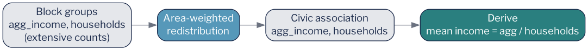
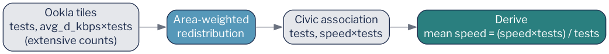

5 Worked Example: Arlington, Step by Step
This chapter walks the full pipeline from raw source files to validated civic-association estimates. The five stages (acquire, redistribute income, redistribute broadband, combine, and validate) correspond directly to the pipeline modules in the companion repository. By the end, each of Arlington’s 62 civic associations has an estimated mean household income and an estimated mean download speed derived from the same underlying geography and the same redistribution logic.
The complete runnable pipeline is a single command: uv run python -m pipeline.run.
5.1 Stage 1: Acquire the source data
Three datasets must be in hand before any redistribution can take place.
Census block-group boundaries are fetched programmatically using pygris, a Python wrapper around the Census Bureau’s TIGER/Line shapefiles API. The call retrieves the block-group polygons for Arlington County (FIPS 51013) at the 2021 vintage, which aligns with the ACS five-year estimates used for income. The resulting GeoDataFrame provides the source geometry for the ACS redistribution step.
ACS income variables are retrieved through the Census API using a Census API key. The two variables used are B19025_001E (aggregate household income in the past 12 months) and B11001_001E (number of occupied housing units, i.e., households). Both are block-group-level estimates from the ACS 2021 five-year release. Neither is a median; both are extensive counts that can be legitimately redistributed. A Census API key is required; the pipeline reads it from the environment variable CENSUS_API_KEY.
Ookla fixed-broadband speed-test tiles are downloaded from Ookla’s public Amazon S3 bucket, which hosts quarterly snapshots of the aggregated tile data as geoparquet files. The pipeline fetches the Q1 2021 tile for the relevant S3 path, clips it to the Arlington bounding box, and retains two columns: tests (the count of speed tests in each tile during the quarter) and avg_d_kbps (the average download speed across those tests, in kilobits per second). Both are used in the broadband redistribution below.
With these three inputs in hand (block-group polygons, ACS counts, and Ookla tiles), the pipeline is ready to redistribute.
5.2 Stage 2: Redistribute income
Income follows the pattern described in Section 4.2. The two ACS variables, aggregate household income and household count, are extensive measures. Both are redistributed independently to civic associations using area-weighted interpolation. The redistribution preserves their totals: whatever aggregate income exists across all block groups flows, in its entirety, to the set of civic associations (since civic associations tile the county without gaps or overlaps).
Figure 5.1 illustrates the transformation. The source (block groups) carries two count columns, and the target (civic associations) receives redistributed versions of both.

Once redistribution is complete, mean household income for each civic association is a simple arithmetic step:
\[\text{mean income}_j = \frac{\text{agg. income}_j}{\text{households}_j}\]
The result is a population-weighted mean: larger block groups (more households) contribute more to the civic association’s estimate than smaller ones, scaled continuously by the fraction of their area that falls within the association’s boundary.
5.3 Stage 3: Redistribute broadband
Broadband speed requires one additional preparatory step because download speed, like income, is an intensive measure. The variable reported in the Ookla tiles, avg_d_kbps, cannot be directly redistributed. The count that makes it meaningful, tests, can.
The solution is to reconstruct the extensive quantity that, when divided by test count, recovers average speed. For each tile:
\[\text{speed} \times \text{tests} = \text{total download kilobits (proxy)}\]
This product is an extensive count: if a tile’s area is split in two, each half contributed roughly half the total download kilobits. It can be redistributed. The test count is also extensive and can be redistributed. After both are moved to civic associations, the intensive rate is derived:
\[\text{download speed}_j = \frac{(\text{speed} \times \text{tests})_j}{\text{tests}_j} \div 1000\]
The division by 1,000 converts kilobits per second to megabits per second for presentation.
Figure 5.2 shows the broadband transform. Notice the structural parallel with the income transform in Figure 5.1: in both cases, the intensive output (mean income, mean speed) appears only after redistribution, never before.

# Speed is INTENSIVE: redistribute counts, then derive the rate.
tiles["d_product"] = tiles["avg_d_kbps"] * tiles["tests"] # extensive
# ... redistribute tests + d_product to civic associations ...
civic["download_mbps"] = (civic["d_product"] / civic["tests"]) / 1000The collapsible snippet above captures the key lines. Creating d_product before redistribution is the move that makes everything else valid. An analyst who skipped this step and redistributed avg_d_kbps directly would produce a speed estimate weighted by area, not by test count: a different and less meaningful quantity that systematically overstates speed in low-density tiles with few tests.
5.4 Stage 4: Combine
With both redistributions complete, the income and broadband results are joined to the civic-association GeoDataFrame on the association identifier. The four intermediate columns (redistributed aggregate income, redistributed households, redistributed test count, and redistributed speed-product) are used to compute the two final output columns: mean_income and download_mbps. All 62 civic associations receive a value for both measures.
5.5 Stage 5: Validate
Before proceeding to analysis or visualization, the pipeline verifies one internal consistency check: household totals should be preserved by the redistribution. The sum of redistributed households across all 62 civic associations is compared to the sum of ACS household counts across all block groups. In a well-functioning redistribution over a complete, non-overlapping partition of the county (which Arlington’s civic associations are), these totals should be identical up to floating-point rounding.
In practice, the redistributed household total is preserved within 2% of the source total, a result of minor edge effects at the county boundary where tile clipping introduces small geometric imprecision. This tolerance is well within the margin of the ACS sampling error itself, and it confirms that the redistribution has not created or destroyed households at any meaningful scale.
Analysts applying this method to their own geographies should perform this same check. A discrepancy larger than a few percent typically indicates either a non-exhaustive target partition (gaps between target polygons), a coordinate-reference-system mismatch between source and target layers, or a geometric validity problem in one of the input files.
With validation passed, the pipeline writes its output and the data is ready for mapping and analysis, the subject of the next chapter.